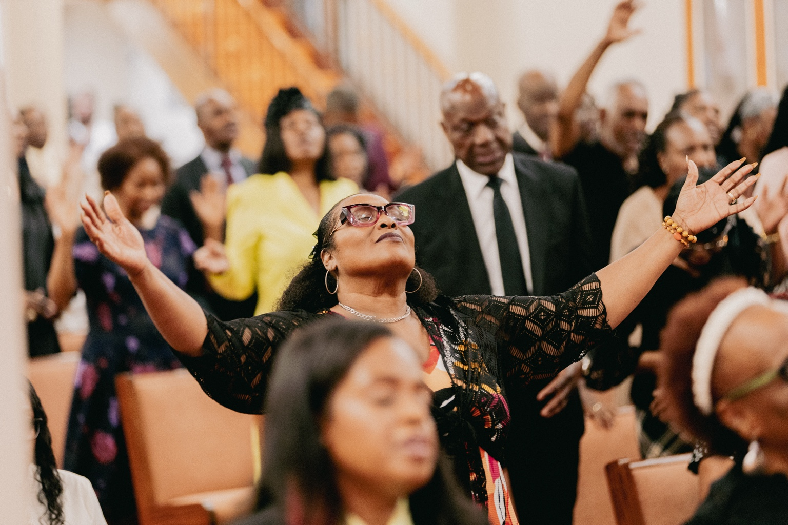

Worship
Sunday Worship Service
Sunday mornings at 10:30 a.m.

Welcome to House of Bread Ministries
A church in the heart of the city, with the city in its heart. Come experience passionate worship, biblical teaching, and a family ready to welcome you.
You are welcome here
Whether you are new to faith, returning to church, or looking for a place to grow, House of Bread is a family where you can encounter God and build meaningful relationships.
Our heart is to help every person find hope in Jesus, discover purpose, and experience the love of a genuine church community.
Discover our story

“For where two or three are gathered together in my name, there am I in the midst of them.
Matthew 18:20

Your first Sunday
From the moment you arrive, our team is ready to help you feel comfortable. Expect heartfelt worship, a Bible-centered message, prayer, and people who are genuinely glad you came.
Come comfortably
There is no dress code. Come as you are.
Bring the family
Children, teens, adults, and seniors are all welcome.
Stay connected
Meet our church family and learn about your next step.
A welcome from our pastor
At House of Bread Ministries, you will find a caring family committed to worship, prayer, the Word of God, and serving our community. We would be honored to welcome you and walk alongside you in faith.

 Evangelist Jacqueline Lyne
Evangelist Jacqueline LyneChurch life
HOB Online
Watch recent services, revisit a message, and worship with the House of Bread family wherever you are.
Watch Recent Services